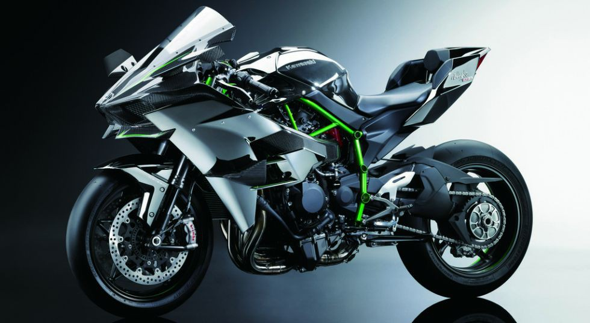
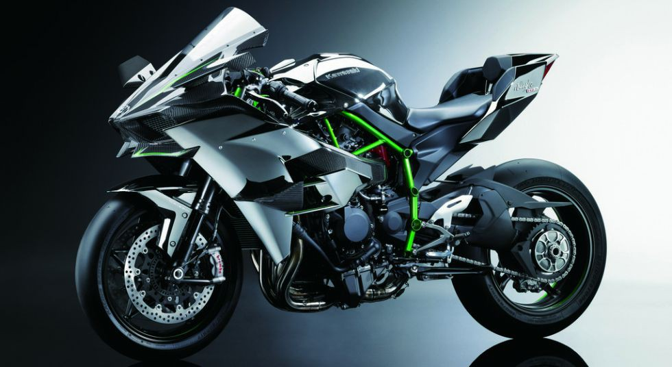

kawasaki
 

Creada para ser la máxima expresión en prestaciones en una motocicleta, la Ninja H2R es una moto con un motor con compresor. Nacida de la cooperación de varias divisiones del grupo KHI, la Ninja H2R incorpora lo último en tecnología de motores y chasis, materiales y prestaciones, toda una pieza de artesanía tecnológica llamada a ser un icono dentro del mundo del motociclismo.